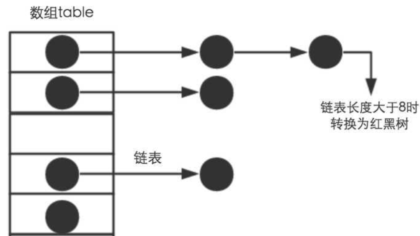
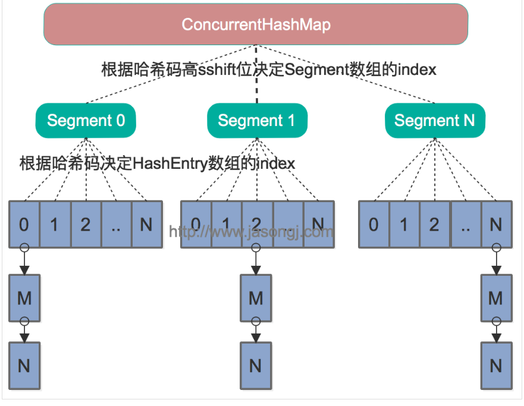
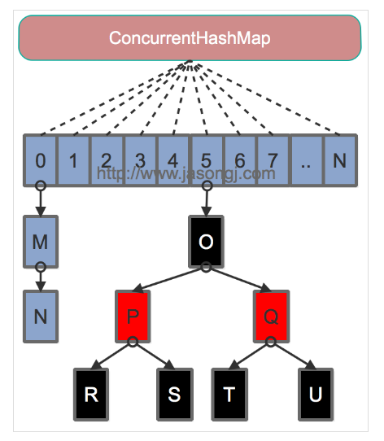

HashMap
我们知道Map是一个key-val的集合，HashMap是基于Hash表的Map接口的非同步实现。HashMap的基本数据结构是数组和链表。

HashMap原理
基于hashing原理，我们通过put()和get()方法储存和获取对象。当我们将键值对传递给put()方法时，它调用键对象的hashCode()方法来计算hashcode，返回的hashCode用于找到bucket位置来储存Entry对象。如果该位置已经有元素了,调用equals方法判断是否相等,相等的话就进行替换值,不相等的话,放在链表里面.
当获取对象时，通过键对象的equals()方法找到正确的键值对，然后返回值对象。HashMap使用链表来解决碰撞问题，当发生碰撞了，对象将会储存在链表的下一个节点中。 HashMap在每个链表节点中储存键值对对象
HashMap的存储原理和存储过程
声明一个下标范围比较大的数组来存储元素，另外设计一个哈希函数获得每一个元素的Key（关键字）的函数值（即数组下标，hash值）相对应，数组存储的元素是一个Entry类，这个类有三个数据域，key、value（键值对），next(指向下一个Entry)。 当两个key通过哈希函数计算相同时，则发生了hash冲突(碰撞)，HashMap解决hash冲突的方式是用链表。
例如， 第一个键值对A进来。通过计算其key的hash得到的index=0。记做:Entry[0] = A。
第二个键值对B，通过计算其index也等于0， HashMap会将B.next =A,Entry[0] =B,
第三个键值对 C,index也等于0,那么C.next = B,Entry[0] = C；这样我们发现index=0的地方事实上存取了A,B,C三个键值对,它们通过next这个属性链接在一起。所以当hash冲突很多时，HashMap退化成链表。
put过程：
- 先判断键值对数组
table[i]是否为空否则进行扩容操作（resize（））； - 根据键值
key计算hash值得到插入的数组索引i，如果table[i]==null，直接新建节点添加到最后一步，如果table[i]不为空进行下一步； - 判断
table[i]的首个元素是否和key一样，如果相同直接覆盖value，否则进行下一步，这里的相同指的是hashCode以及equals； - 判断
table[i]是否为treeNode，即table[i]是否是红黑树，如果是红黑树，则直接在树中插入键值对，否则进行下一步； - 遍历
table[i]，判断链表长度是否大于8，大于8的话把链表转换为红黑树，在红黑树中执行插入操作，否则进行链表的插入操作；遍历过程中若发现key已经存在直接覆盖value即可； - 插入成功后，判断实际存在的键值对数量
size是否超多了最大容量threshold，如果超过，进行扩容。
get过程：
- 先通过
key值进行哈哈希函数的运算得到hash值； - 调用
getNode()，得到桶号； - 在桶里面找元素和
key值相等的即可，未找到返回空。
hashmap的负载因子
HashMap的初始化容量为什么为2的次幂？
因为在get（）方法中，获得元素的位置是通过(length- 1) & h来得到的，其中h:为插入元素的hashcode length:为map的容量大小。如果length为2的次幂 则length-1 转化为二进制必定是11111……的形式，在于h的二进制与操作效率会非常的快，而且空间不浪费。如果是其他的话，空间不够，碰撞的几率变大，查询变慢，空间会浪费。
为什么HashMap是非线程安全的？
首先我们知道为了减少冲突，我们需要时刻留意当前的size是否太大，检查是否需要扩容，一旦超过设定的threshold，那么就要重新增大数组尺寸，此时所有元素都需要重新计算应该放置的下标。同时HashMap在扩容的时候，是通过重新创建一个新的hash表，把原来旧数组中的Entry一个个迁移到新数组的，注意一点就是计算在newTable中的位置，原来在同一条链上的元素可能被分配到不同的位置，看下面的源码。每次会扩容长度为以前的2倍，原因看上面。
1 | void transfer(Entry[] newTable) { |
单线程的情况resize（）是没有问题的，但是多线程的时候就可能会出现形成环形链表的情况，导致扩容失败。具体详细的图可以看https://blog.csdn.net/andy_budd/article/details/81413464
HashMap和HashTable的区别：
HashTable 是不能接受NULL，NULL值组合的，而HashMap可以。（因为HashMap做了对应的NULL值处理，会把NULL值的键值对放到hashcode为0的链表里面）。
HashTable是线程安全的，HashMap是线程非安全的。因为HashTable是synchronized，要想是HashMap线程安全Map m = Collections.synchronizeMap(hashMap).
HashMap和TreeMap比较
HashMap适用于在Map中插入、删除和定位元素。Treemap适用于按自然顺序或自定义顺序遍历键（key）。HashMap通常比TreeMap快一点（树和哈希表的数据结构使然），建议多使用HashMap,在需要排序的Map时候才用TreeMap。TreeMap的底层是红黑树。HashMap非线程安全TreeMap非线程安全HashMap的结果是没有排序的，而TreeMap输出的结果是排好序的。
为什么HashMap长度大于8才转换为红黑树，而不是6
红黑树的平均查找长度是log(n)，长度为8，查找长度为log(8)=3，链表的平均查找长度为n/2，当长度为8时，平均查找长度为8/2=4，这才有转换成树的必要；链表长度如果是小于等于6，6/2=3，虽然速度也很快的，但是转化为树结构和生成树的时间并不会太短。中间有个差值7可以防止链表和树之间频繁的转换。
这个只是简单的说法个人感觉，正确的说话应该是理想情况下随机hashCode算法下所有bin中节点的分布频率会遵循泊松分布，据概率统计决定的。
CourrentHashMap
Java 7中的ConcurrentHashMap的底层数据结构仍然是数组和链表。与HashMap不同的是，ConcurrentHashMap最外层不是一个大的数组，而是一个Segment的数组。每个Segment包含一个与HashMap数据结构差不多的链表数组。整体数据结构如下图所示。

get过程
在读写某个Key时，先取该Key的哈希值。并将哈希值的高N位对Segment个数取模从而得到该Key应该属于哪个Segment，接着如同操作HashMap一样操作这个Segment。为了保证不同的值均匀分布到不同的Segment，需要通过如下方法计算哈希值。
Segment继承自ReentrantLock，使用分段锁的机制。
对于写操作，并不要求同时获取所有Segment的锁，因为那样相当于锁住了整个Map。它会先获取该Key-Value对所在的Segment的锁，获取成功后就可以像操作一个普通的HashMap一样操作该Segment，并保证该Segment的安全性。
同时由于其它Segment的锁并未被获取，因此理论上可支持concurrencyLevel（等于Segment的个数）个线程安全的并发读写。
对于读操作，获取Key所在的Segment时，需要保证可见性，ConcurrentHashMap并没有通过锁或者volatile关键字，而是通过以下方式。
1 | Segment<K,V> s = (Segment<K,V>)UNSAFE.getObjectVolatile(segments, u) |
Java 8为进一步提高并发性，摒弃了分段锁的方案，而是直接使用一个大的数组。同时为了提高哈希碰撞下的寻址性能，Java 8在链表长度超过一定阈值（8）时将链表（寻址时间复杂度为O(N)）转换为红黑树（寻址时间复杂度为O(long(N))）。其数据结构如下图所示：

这个版本，是通过大量的volatile关键字以及CAS操作来实现线程安全的。
对于put操作，如果Key对应的数组元素为null，则通过CAS操作将其设置为当前值。如果Key对应的数组元素（也即链表表头或者树的根元素）不为null，则对该元素使用synchronized关键字申请锁，然后进行操作。如果该put操作使得当前链表长度超过一定阈值，则将该链表转换为树，从而提高寻址效率。
对于读操作，由于数组被volatile关键字修饰，因此不用担心数组的可见性问题。同时每个元素是一个Node实例（Java 7中每个元素是一个HashEntry），它的Key值和hash值都由final修饰，不可变更，无须关心它们被修改后的可见性问题。而其Value及对下一个元素的引用由volatile修饰，可见性也有保障。
HashMap,HashTable,CourrentHashMap的key和value是否可为null
HashMap对象的key、value值均可为null。
ConcurrentHashMap，HahTable对象的key、value值均不可为null。
HashMap在put的时候会调用hash()方法来计算key的hashcode值，可以从hash算法中看出当key==null时返回的值为0。因此key为null时，hash算法返回值为0，不会调用key的hashcode方法。但是HashTable存入的value为null时，抛出NullPointerException异常。如果value不为null，而key为空，在执行到int hash = key.hashCode()时同样会抛出NullPointerException异常。
那为什么这么设计？
ConcurrentHashmap和Hashtable都是支持并发的，这样会有一个问题，当你通过get(k)获取对应的value时，如果获取到的是null时，你无法判断，它是put（k,v）的时候value为null，还是这个key从来没有做过映射。HashMap是非并发的，可以通过contains(key)来做这个判断。
对于TreeMap的话value是可以为null的，对于key的话未实现 Comparator 接口时，key 不可以为null，否则抛 NullPointerException 异常；当实现Comparator接口时，若未对null情况进行判断，则可能抛 NullPointerException 异常。如果针对null情况实现了，可以存入，但是却不能正常使用get()访问，只能通过遍历去访问。